Introduction
In order to perform a fracture mechanics design analysis, firstly, it is necessary to determine the fracture toughness of the material.
Several tests have been developed over the years to determine this parameter, ASTM D7313 [1] uses the circular compact tension specimen
for concrete, and the 3 point (point bending) specimen has also been used to obtain this property in high strength concrete [2].
On the other hand, the wedge splitting test [3] was introduced as a new method in 1990 with the purpose of determining the fracture toughness
(K_IC) of the tested specimen material, as well as the specific energy required to produce the failure of the specimen. The test produces the
fracture of the specimen by controlling the force applied symmetrically to the element using wedges and rollers (Figure 1). The specimen is
placed on a fixed support while the load is applied. Two variables are measured during the test, the horizontally applied force (F_H) and the
crack face displacement, better known as crack tip displacement (CTOD). Once the fracture occurs, the area under the graph F_H vs CTOD is calculated,
this parameter is nothing more than the energy necessary to produce the fracture of the body. The amount previously calculated, divided by the area of
the resistant zone, translated into the specific fracture energy (G). Several authors have used the WTS to determine the fracture toughness of concrete
[4] [5], recognizing a great advantage of working with this specimen due to its manufacture and the control over controlled crack growth [Reference].
In this research, the real conditions of load and displacement of the test are recreated using ANSYS workbench 2019 software [6] to obtain a graphical
relationship of great help at the time of executing the experimental test.
Methodology
The simulation performed uses the finite element method to recreate the WST test conditions. The results obtained are compared with results
from the literature for another simulation performed where an expression is derived for the calculation of the stress intensity factor as a
function of several dimensionless parameters, these values are taken as theoretical to calculate the percentage error between the two studies.
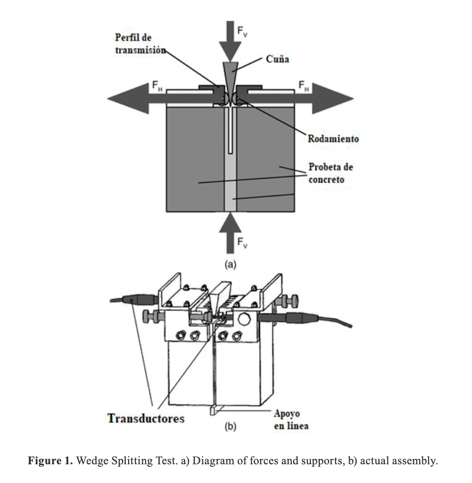
Both in the test and in the simulation the influence of the vertical force subject to the angle of the wedge is disregarded, usually between 10
and 15°. During the test, the force is transmitted from the wedge to the specimen by means of 2 steel sections, these sections have 5 times the
modulus of elasticity of the tested body, which mean, the concrete. The test is performed with this configuration in order to disregard the deformations
in the steel during the application of the load (see equation 1).
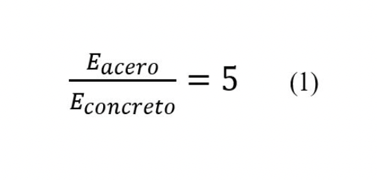
Where:
Eacero [MPa] corresponds to the modulus of elasticity of steel and Econcreto [MPa] corresponds
to the modulus of elasticity of concrete.
itions, the specimen is subjected, this is subjected to a bending effort, allowing the presence of modes II and III to be neglected.
Subjecting the specimen to loading mode I allows the specimen to fracture symmetrically in a direction perpendicular to the applied
load, that mean, almost vertically. Since this test is mainly performed for brittle materials, the fundamentals of linear elastic
fracture mechanics can be applied [7] [9].
The present study contemplates a three-dimensional geometry so that the variation of the stress intensity factor along the crack front
can be analyzed. Figure 2 shows the specimen and all possible parameters to be evaluated.
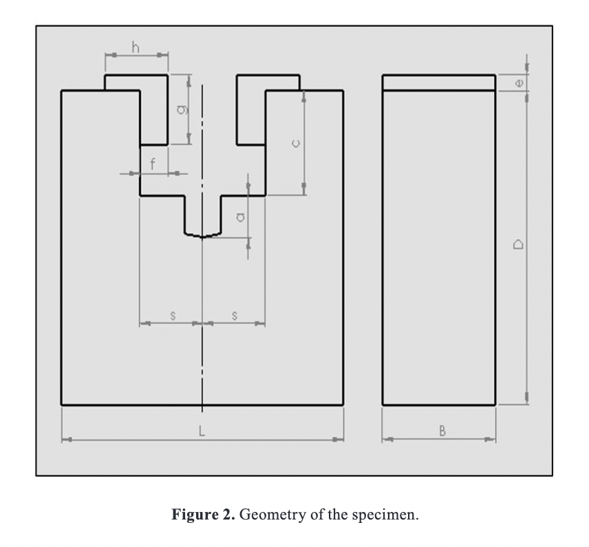
The parameters that will remain fixed during the simulation and their values are:
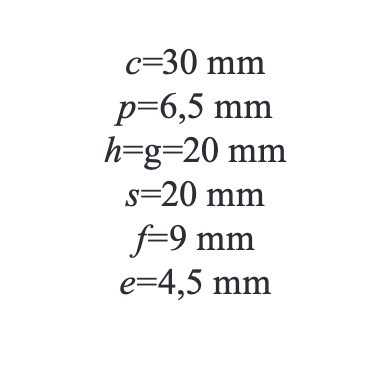
In this work a horizontal force FH of 1000 N is used, values of the geometric condition d/c equal to 3, 4,5,6,7 and 8
are treated. For each of these values, the dimensionless parameter a/d-c is varied from 0.2 to 0.6 in order to see the influence
of the variation of the crack length a on stress intensity factor.
The theoretical value of the stress intensity factor is calculated using the following correlation given by Guinea and
Planas [10].
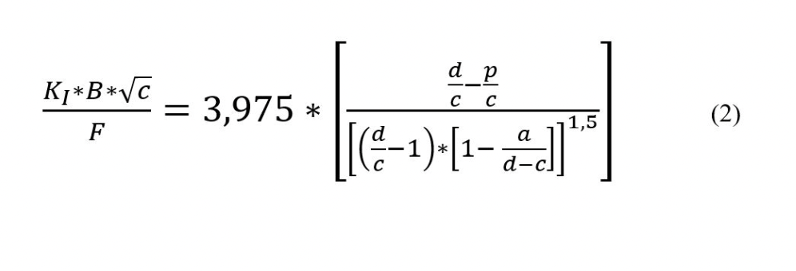
Where:
KI [MPa√m] is the stress intensity factor for loading mode I, B [m] is the specimen thickness, a [m] is the crack size, F
is the applied force, and c,d and p [m] are geometric dimensions of the specimen.
It can be seen that the above expression is expressed as a function of the specimen geometry and the applied load. A large
number of expressions have been proposed to determine the stress intensity factor in similar tests [11] [12]
[12] [13] [14]. In order to show the procedure performed, the parameters and tools used in
the simulation are presented step by step:
A CAD modeling of the specimen in ANSYS Design Modeler.
B Configuration for a study under static loading using the static structural module.
C Assignment of the mechanical properties for the materials, keep in mind that they are modeled as isotropic homogeneous: Esteel= 200GPa,
vsteel = 0,3, Econcrete = 40 GPa y vconcrete = 0,15
D Assignment of contact conditions between the steel sections and the specimen, working with a fixed or bonded contact.
E Creation of the coordinate system at the crack tip, necessary for the calculation of the J-integral.
F Configuration and sizing of the tetrahedral finite element mesh in the structure, with a refinement in the contact zone and in the stress zone.
A refinement of 2 times the element size is used in the zone near the crack tip (See Figure 3).
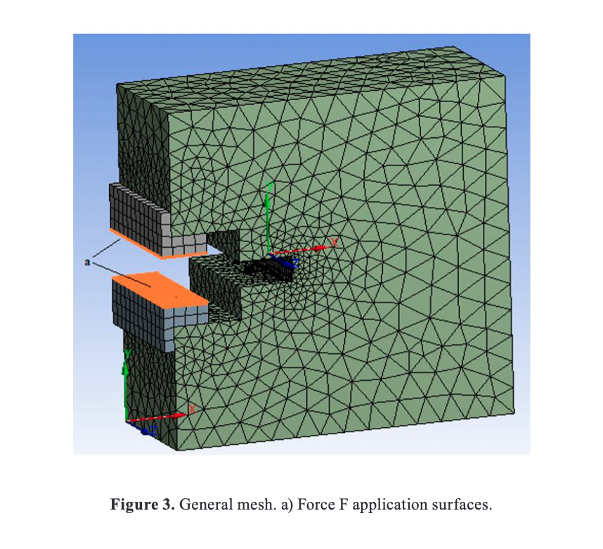
G. Configuration of the fracture parameters in the test, a preformed crack with known length is programmed according to the case of study, for
this crack size the stress intensity factors are subsequently calculated.
H. Definition of boundary conditions, loads and displacements. Two normal forces are implemented to the inner faces of steel profiles, these
forces have equal magnitude (1000 N) and opposite direction as shown in Figure 3. To simulate the support at the bottom of the specimen, a
movement constraint is implemented at the central nodes of the bottom face along the entire width (B) of the body.
I. Generation of results for the stress intensity factor by computing the J integral given by the following expression:
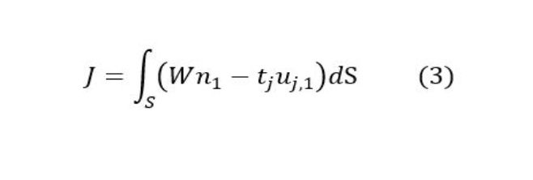
Where:
W is the strain energy density, n1 is the normal to the contour in direction 1, tj is the strain and uj,1 is the derivative of the
displacement with respect to direction 1. Note that direction 1 is the x-axis. Once the J-integral is evaluated for any contour S in
the counterclockwise direction, the stress intensity factor can be calculated with the following relation for isotropic homogeneous
materials [15]:
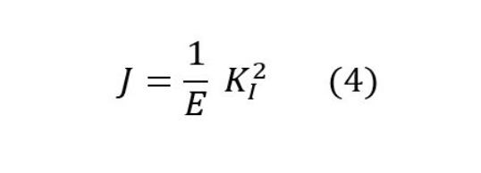
Results
The SIF results for the K_I loading mode are expressed as a function of specimen depth in Figure 4, the software evaluates the stress intensity
factor by means of the J integral [16]. The value of the J integral is independent of the integration path [17], in order to verify the influence
of the worked mesh and the contour used in the SIF evaluation it is necessary to evaluate J for several contours around the preformed crack.
Figure 4 presents the evaluation of 8 contours around the crack tip, where it can be observed that the results for contours 3 onwards present
the same value for the stress intensity factor, this value, invariant with the contours, is the one taken as a result of the different simulations
for the variations in the geometry of the body.
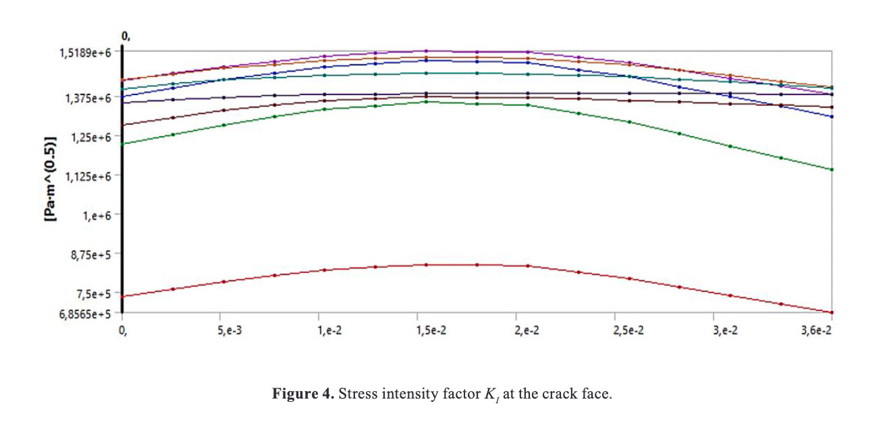
The figure shows the variation of the stress intensity factor with the width of the specimen (See Figure 4), this is due to the fact that there
are two states present in the body: a flat deformation state in the central part of the specimen and a flat stress state in the lateral zones.
According to the methodology, the different simulations are programmed for the values of a/d-c, d/c, and F and the following results are obtained.
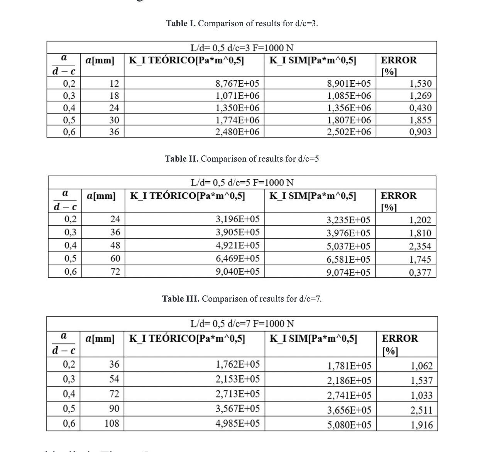
These can be seen graphically in Figure 5.
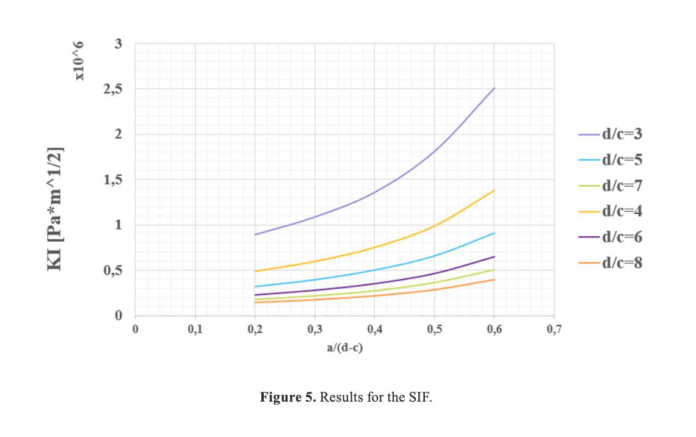
In order to make the results more practical, the value of the stress intensity factor is plotted dimensionless on the ordinate axis (Figure 6).
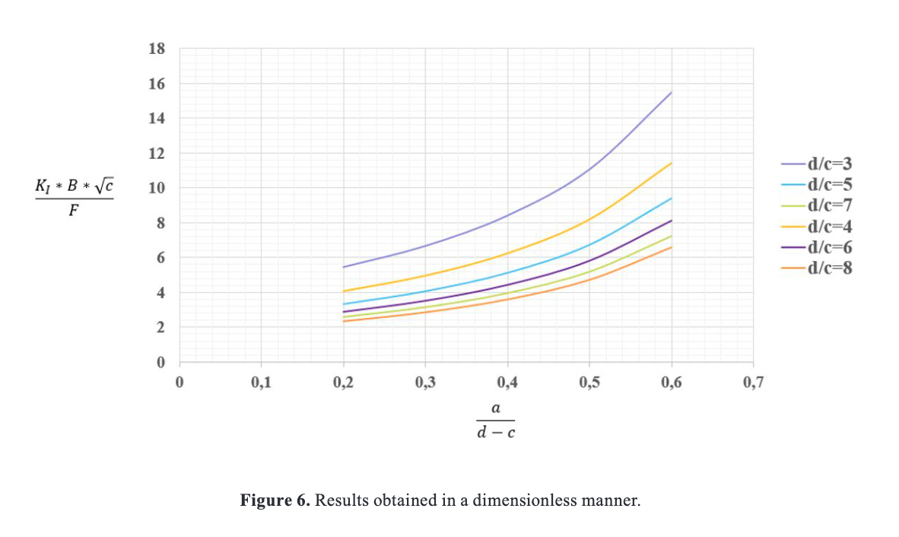
When working with the finite element method, it is necessary to perform a sensitivity analysis in order to verify that the results obtained
converge to the desired solution, in another words, to find the minimum number of elements to be used, where the results remain stable. To
carry out the analysis, variations are made in the size of the elements at the crack tip (See Figure 7), it is observed that the stress
intensity factor converges to a specific value for each case of study. The simulated results are presented in Figure 8 as a function of the
number of elements at the crack front.
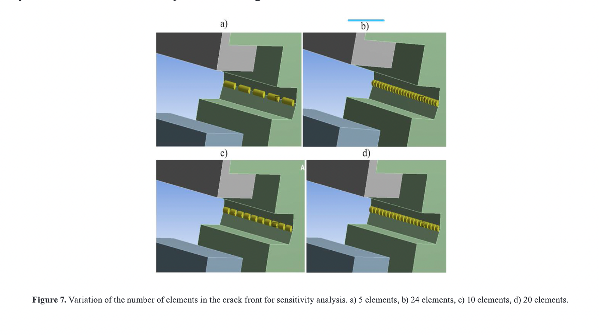
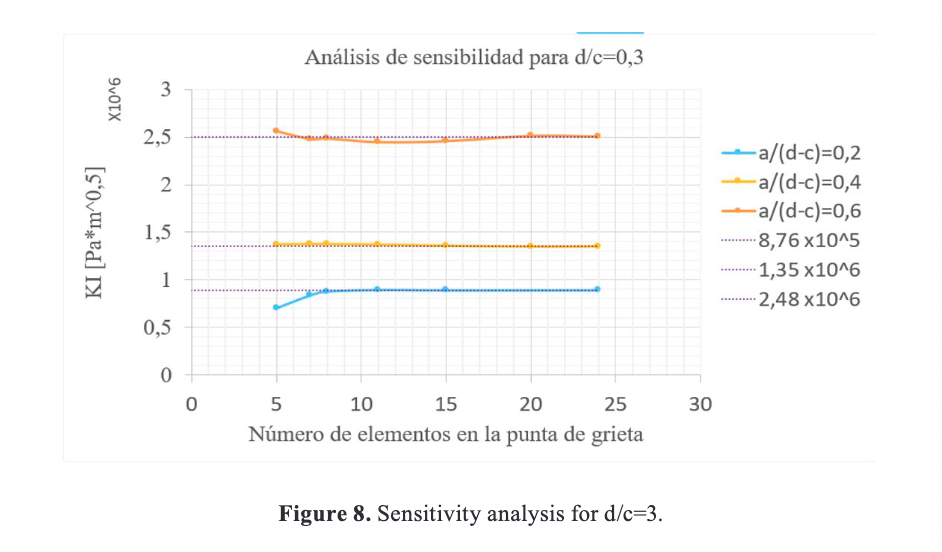
After a minimum number of elements in the crack front the value of the stress intensity factor remains constant for each specific case,
this convergence value was taken to compare it with the theoretical results of the experimental correlations of Guinea and Planas [10].
Conclusions
- With the obtained graphs it is possible to evaluate the critical stress intensity factor (fracture toughness) for a test performed if
its geometry and the force at the moment of failure are known. Once the fracture toughness value of the material to be worked on is known,
the fracture mechanics design process can be carried out by comparing the applied stress intensity factor with the fracture toughness, in
another words using the failure criterion for static loads.
- The experimental analytical correlation of Guinea and Planas [10] is validated for the Wedge splitting test in concrete.
- Figures 5 and 6 show a strong dependence with specimen dimensions and crack size, so it can be stated that the relationship with the
stress intensity factor is inverse with geometric dimensions and direct with crack size, the same behavior observed by Guan [18].
- The sensitivity analysis was performed for all simulated tests, therefore, it is corroborated that the presented results do not depend on the mesh
refinement after implementing 10 or more elements at the crack front.
References
[1] ASTM D7313-13, Standard Test Method for Determining Fracture Energy of Asphalt-Aggregate Mixtures Using the Disk-Shaped Compact Tension Geometry, West Conshohocken: ASTM International, 2013.
[2] S. Djaknoun, E. Ouedraogo y A. A. Benyahia, «Fracture Toughness of High-Performance Concrete on Three-Point Bending Notched Beams at Elevated Temperature,» Advanced Materials Research, Vols. %1 de %289-91, p. 159–164, 1 2010.
[3] E. Brühwiler y F. H. Wittmann, «The wedge splitting test, a new method of performing stable fracture mechanics tests,» Engineering Fracture Mechanics, vol. 35, pp. 117-125, 1990.
[4] S. Xu y H. W. Reinhardt, «Determination of double-K criterion for crack propagation inquasi-brittle fracture, Part III: Compact tension specimens and wedge splitting specimens,» International Journal of Fracture, vol. 98, p. 179–193, 1999.
[5] H. M. Abdalla y B. L. Karihaloo, «Determination of size-independent specific fracture energy of concrete from three-point bend and wedge splitting tests,» Magazine of Concrete Research, vol. 55, p. 133–141, 4 2003.
[6] ANSYS workbench, 2019. [Online]. Available: https://www.ansys.com/, Accessed on: Jan. 5, 20
[7] R. Torrecillas y J. S. Moya, «Mecanica de fractura en materiales ceramicos fragiles. I: Principios fundamentales,» Boletin De La Sociedad Espanola De Ceramica Y Vidrio, vol. 27, pp. 123-135, 1988.
[8] H. Jaramillo Suárez, N. A. Sánchez, J. U. A. N. ASPRILLA y A. L. V. A. R. O. SANCHEZ, Introducción a la mecánica de la fractura y análisis de fallas, 2008.
[9] T. L. ANDERSON, Fracture mechanics fundamental and applications, Taylor & Francis group, 20
[10] G. Guinea, M. Elices y J. Planas, «Stress intensity factors for wedge-splitting geometry,» International Journal of Fracture, vol. 81, pp. 113-124, 1996.
[11] Y. S. Jenq y S. P. Shah, «A Fracture toughness criterion for concrete,» Engineering Fracture Mechanics, vol. 21, pp. 1055-1069, 1985.
[12] B. L. Karihaloo y P. Nallathambi, «An improved effective crack model for the determination of fracture toughness of concrete,» Cement and Concrete Research, vol. 19, pp. 603-610, 1989.
[13] G. Guinea, J. Pastor, J. Planas y M. Elices, «Stress Intensity Factor, Compliance and CMOD for a General Three-Point-Bend Beam,» International Journal of Fracture, vol. 89, pp. 103-116, 1 1998.
[14] S. Kumar, S. Pandey y A. Srivastava, «Determination of Double K Fracture parameters of Concrete using split-Tension cube test,» Computers and Concrete, vol. 9, pp. 81-97, 2 2012.
[15] C. Zhu, J. Li, G. Lin y H. Zhong, «Study on the relationship between stress intensity factor and J integral for mixed mode crack with arbitrary inclination based on SBFEM,» IOP Conference Series: Materials Science and Engineering, vol. 10, p. 012066, 7 2010.
[16] J. Rice, «A Path Integral and the Approximate Analysis of Strain Concentration by Notches and Cracks,» Journal of Applied Mechanics, vol. 35, pp. 379-386, 6 1968.
[17] J. Begley y J. Landes, «THE J INTEGRAL AS A FRACTURE CRITERION,» 1972.
[18] J. F. Guan, X. Z. Hu, C. P. Xie, Q. B. Li y Z. M. Wu, «Wedge-splitting tests for tensile strength and fracture toughness of concrete,» Theoretical and Applied Fracture Mechanics, vol. 93, p. 263–275, 2 2018.

 Escuela de Ingeniería Mecánica,
jairo.mantilla@correo.uis.edu.co.
Escuela de Ingeniería Mecánica,
jairo.mantilla@correo.uis.edu.co.
 ORCID:
0000-0003-1933-8362.
Universidad Industrial de Santander, Colombia.
ORCID:
0000-0003-1933-8362.
Universidad Industrial de Santander, Colombia.